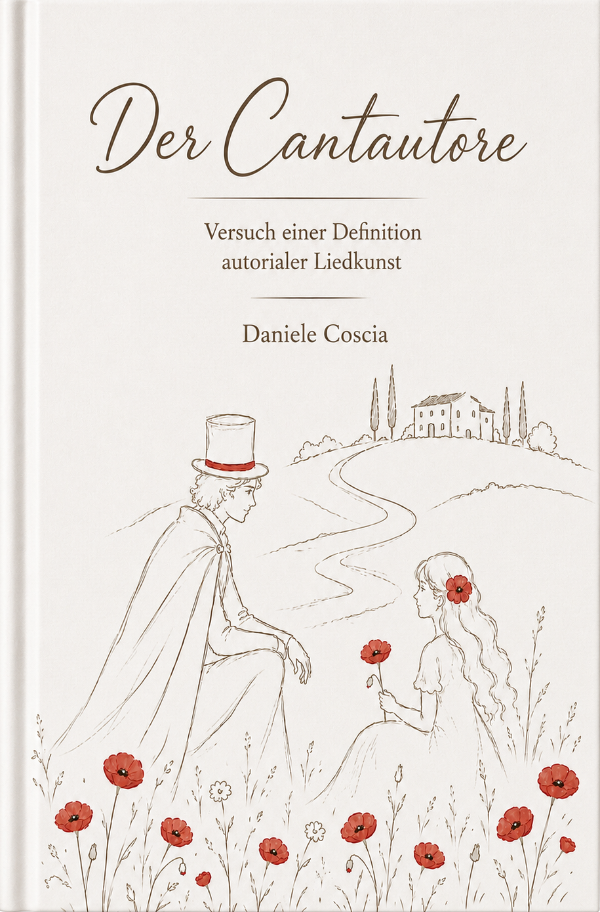

Il Cantautore
Saggio per una definizione
della canzone d'autore
Un libro scritto con approccio storico-culturale e saggistico sullo speciale legame tra testo, musica e messaggio personale.
ISBN: 978-3-00-83512-6 | Prezzo: 14,90,- Euro
Nota: Il libro è attualmente disponibile solo in tedesco e l'uscita in italiano è prevista per novembre 2026.

Il libro
Cantautore, singer-songwriter, chansonnier – o comunque si voglia chiamarli. L'alta forma dell'arte della canzone ha molti nomi, ma raramente ci si chiede se dietro di essi si nasconda un artigianato comune. Esistono criteri nascosti, tangibili dal punto di vista musicologico, che distinguono quest'arte dalla semplice musica pop? E se sì: come si possono descrivere senza che la magia si dissolva?
Questa indagine affronta questa domanda – e una seconda, più pratica: è necessario avere il talento di un Lucio Dalla o di un Leonard Cohen, oppure un musicista può fare propri questi criteri? Può contrapporre qualcosa di duraturo alla superficialità acustica e accelerata del nostro tempo?
Il viaggio inizia proprio dove quest'arte della canzone è cresciuta in modo più fitto e senza compromessi: in Italia. E termina in America. Nel mezzo si snoda un cammino musicale fatto di profondità, di storia – e, a dire il vero, anche di qualche bar. Non è un semplice saggio accademico, non è assolutamente un romanzo e nemmeno un saggio in senso stretto. Ciò che è, è difficile da definire – ma più facile da indirizzare.
L'ho scritto per te, lettore appassionato di musica, che vuoi capire perché una canzone resta mentre altre mille svaniscono. Per te, amante dei suoni italofili, che vuoi tracciare la linea che unisce Sanremo a New York. E per te, autore di canzoni – che non cerchi il successo rapido, ma l'effetto a lungo termine. Per chiunque voglia ampliare i propri orizzonti musicali e non ha paura che il percorso per arrivarci possa essere, a volte, tortuoso.
Verifica IA Musica
Hai letto il libro? Ora scegli alcuni brani e chiediti fino a che punto si tratti di canzone d'autore o dell'opera di un cantautore. Scoprilo con il nostro sofisticato strumento basato sulla tecnologia IA. Esempio di domanda: "Felicità" di Albano & Romina è un'opera da cantautore?
L'autore
Daniele Coscia è autore e pubblicista. Il suo lavoro si concentra sul perché determinate cose riescano a esercitare un impatto speciale – che si tratti dell'effetto "WOW" nascosto in un design o delle caratteristiche difficilmente afferrabili dell'arte e della musica. L'autore persegue l'idea di rendere visibile ciò che sembra indescrivibile e di rendere comprensibile la percezione intuitiva attraverso strutture riconoscibili. Nell'autunno del 2026 uscirà il suo prossimo libro: „Design – Der WOW-Effekt“ (Design – L'effetto WOW).
Contatto
Le informazioni di contatto seguiranno a breve.